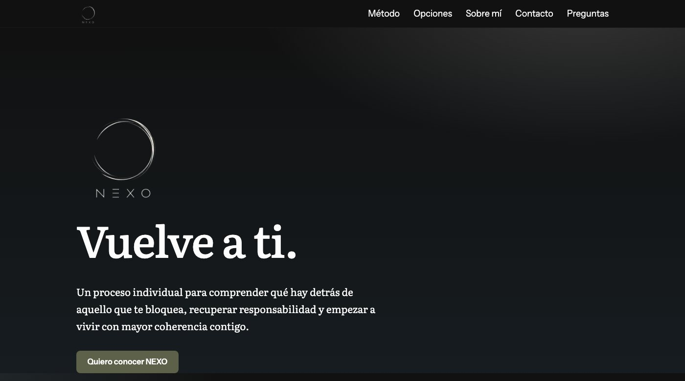
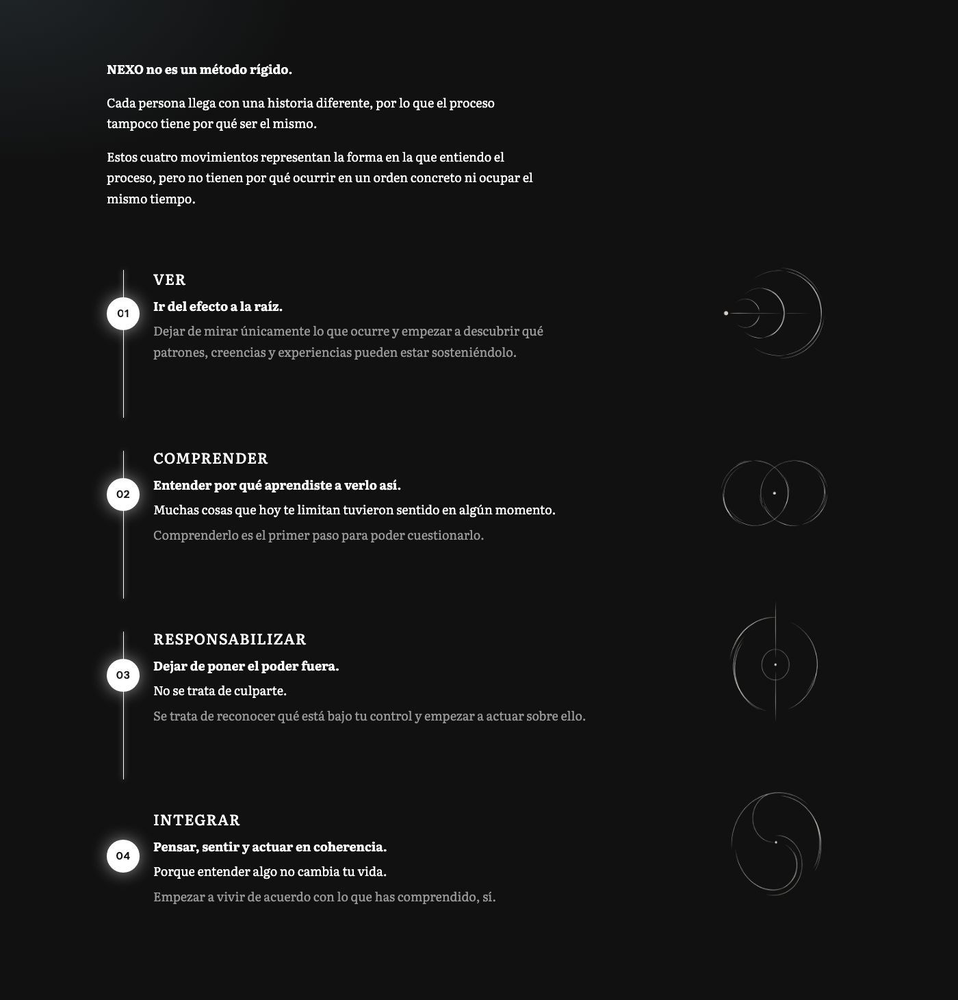
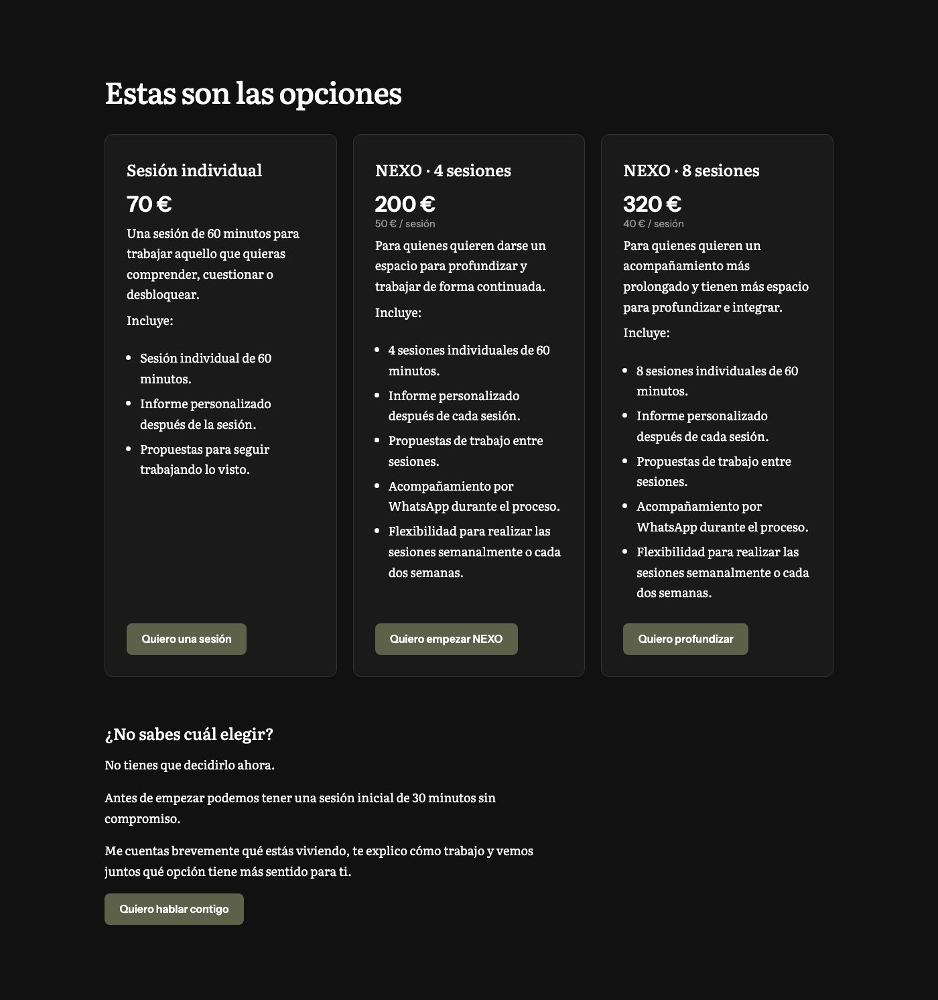
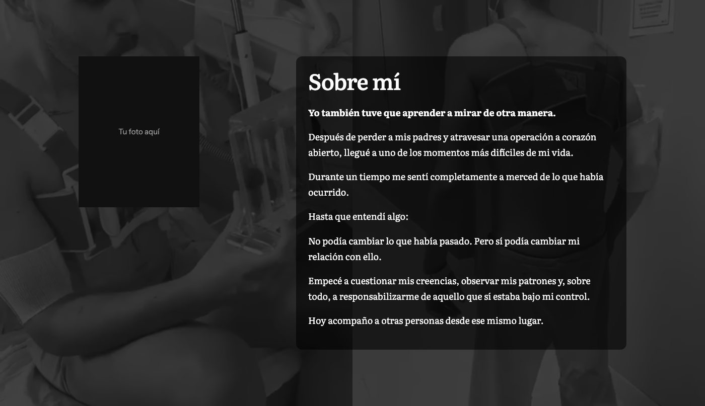
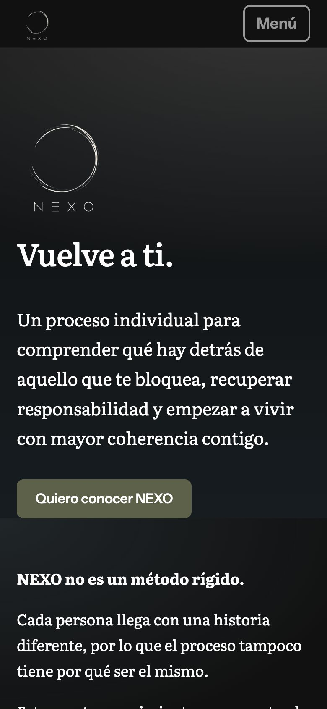

Web de NEXO
La web de Jose Luis para presentar NEXO, su proceso individual de acompañamiento: qué es, para quién es, qué opciones hay y cómo empezar con un mensaje de WhatsApp.
- Cuándo
- 2026 · Encargo
- Rol
- Diseño, desarrollo y despliegue, en solitario
- Stack
- Enlaces
- joseluisjuarez.com La web en producción
Qué es
- Una página estática y rápida, pensada para leerse en el móvil
- Tres opciones de sesiones con su precio y un botón de contacto directo por WhatsApp en cada una
- Preguntas frecuentes, marcadas para que Google pueda mostrarlas
- Sin cookies, sin analítica y sin recursos de terceros
Dónde está desplegada
En Cloudflare: el código, el dominio y la entrega de la web viven en la misma cuenta, y cada cambio llega a producción con un git push.
Pulsa una pieza del diagrama para ver qué hace y con qué se conecta.
- Repositorio
- Privado en GitHub. La rama
maines la que se publica, así que es la única que hay que cuidar. - Compilación
- Cloudflare detecta cada push, ejecuta
npm run buildy publica la carpeta resultante. - Red
- La web se sirve desde la red de Cloudflare, cerca del visitante. Fuerza HTTPS, activa HSTS y añade cabeceras de seguridad (CSP,
X-Frame-Options,nosniff). - Dominio
- El dominio y su DNS están en la misma cuenta, y la variante con
wwwredirige a la principal para no duplicar la web. - Visitante
- Recibe HTML ya generado, sin base de datos ni servidor propio, y casi sin JavaScript.
- Cada botón abre un chat con un mensaje ya escrito según la opción elegida. No hay formularios, así que la web no guarda datos de nadie.
Cómo se ha construido
- Astro genera HTML estático; el único JavaScript es la animación de los cuatro pasos, y la página funciona sin él
- Sin terceros: tipografías alojadas en la propia web, sin cookies ni analítica, y por eso sin banner
- Buscadores: mapa del sitio, URL canónica, etiquetas para compartir y datos estructurados de las preguntas frecuentes
- Animaciones: se desactivan si el sistema operativo lo pide
- Seguridad revisada antes de publicar: sin secretos en el repositorio, HTTPS obligatorio y cabeceras que limitan qué puede cargar la página
Capturas




